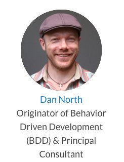
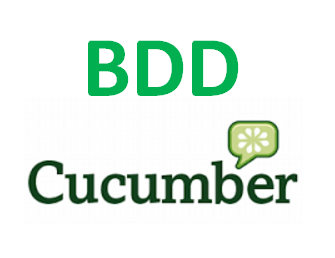
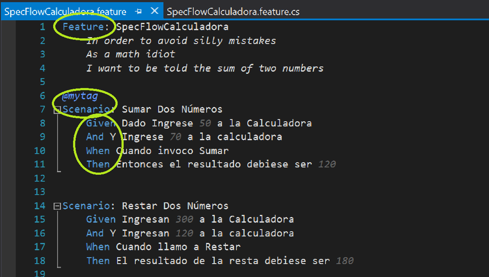
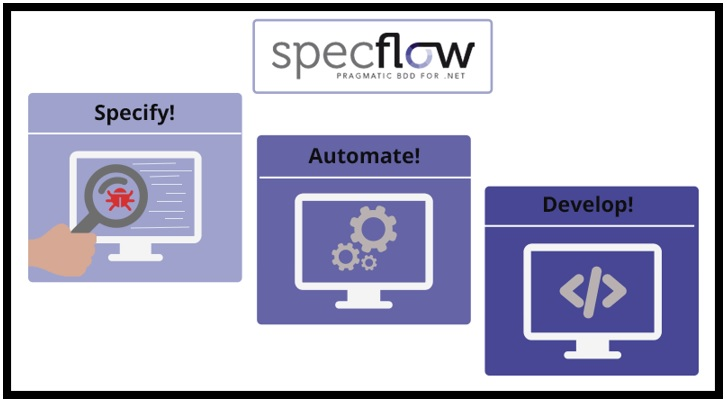
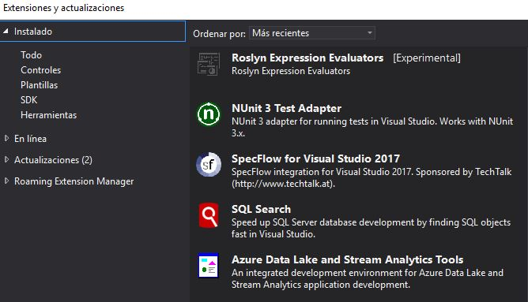
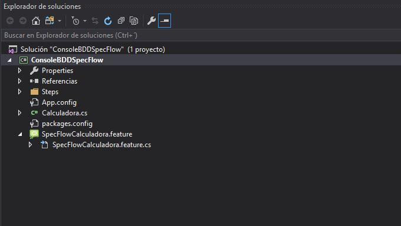
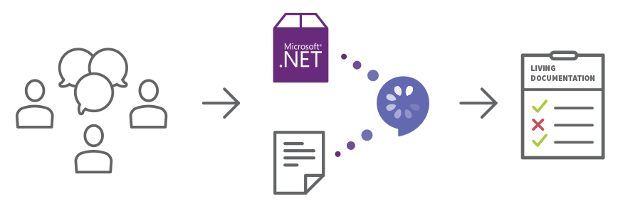

10 Cosas que Necesitas Saber Sobre BDD
(Behaviour Driver Development)+ Demo SpecFlow
1- Importancia del Testing

2- Qué es BDD
Dan North

BDD es una evolución de TDD (Test Driven Development o Desarrollo Dirigido por Pruebas).
De hecho, el concepto de BDD fue inicialmente introducido por Dan North como respuesta a los problemas
que surgían al enseñar TDD.
TDD está basado en 2 prácticas: Escribir las pruebas primero, y Refactorizar después:
TDD: En primer lugar, se escribe una prueba y se verifica que las pruebas fallan.
A continuación, se implementa el código que hace que la prueba pase satisfactoriamente
y seguidamente se refactoriza el código escrito
En BDD también vamos a escribir las pruebas antes de escribir el código fuente,
pero en lugar de pruebas unitarias, lo que haremos será escribir pruebas que verifiquen que
el comportamiento del código es correcto desde el punto de vista de negocio.
Tras escribir las pruebas escribimos el código fuente de la funcionalidad que haga que
estas pruebas pasen correctamente. Después refactorizamos el código fuente.
BDD es un proceso de desarrollo de software que trata de combinar los aspectos puramente técnivos
y los de negocio, de manera que tengamos un marco de trabajo, y un marco de pruebas, en el que los
requisitos de negocio formen parte del proceso de desarrollo.
3- Qué es Cucumber

Cucumber es una de las herramientas que podemos utilizar para automatizar nuestras
pruebas en BDD. Cucumber nos va permitir ejecutar descripciones funcionales en texto
plano como pruebas de software automatizadas.
Cucumber fue creada en 2008 por Aslak Hellesoy y está escrito en Ruby,
aunque tiene implementaciones para casi cualquier lenguaje de programación:
JRuby (usando Cucumber-JVM), Java, Groovy, JavaScript,
JavaScript (usando Cucumber-JVM y Rhino), Clojure, Gosu, Lua,
.NET (usando SpecFlow), PHP (usando Behat), Jython, C++ o Tcl..
4- Qué es Gherkin
Feature: SpecFlowCalculadora
In order to avoid silly mistakes
As a math idiot
I want to be told the sum of two numbers
@mytag
Scenario: Sumar Dos Números
Given Dado Ingrese 50 a la Calculadora
And Y Ingrese 70 a la calculadora
When Cuando invoco Sumar
Then Entonces el resultado debiese ser 120
Scenario: Restar Dos Números
Given Ingresan 300 a la Calculadora
And Y Ingresan 120 a la calculadora
When Cuando llamo a Restar
Then El resultado de la resta debiese ser 180
Gherkin es el lenguaje utilizado para describir las características y escenarios en Cucumber,
proporciona una forma común para que los interesados en negocios, los analistas y los desarrolladores describan el software
y escriban las pruebas de aceptación. Si bien la logística de la estructura de las declaraciones de Gherkin es más
o menos la misma entre las implementaciones, gran parte de la gramática difiere de un proyecto a otro.
Las declaraciones básicas "Dado ... Cuándo ... Entonces" como terminología común permiten a los
equipos construir sus propias condiciones, acciones y descripciones de resultados comprobables.
5- Palabras Clave

Feature: Indica el nombre de la funcionalidad que vamos a probar. Debe ser un título claro y explícito. Incluímos aquí una descripción en forma de historia de usuario: “Como [rol ] quiero [ característica ] para que [los beneficios]”. Sobre esta descripción empezaremos a construir nuestros escenarios de prueba.
Scenario: Describe cada escenario que vamos a probar.
Given: Provee contexto para el escenario en que se va a ejecutar el test, tales como punto donde se ejecuta el test, o prerequisitos en los datos. Incluye los pasos necesarios para poner al sistema en el estado que se desea probar.
When: Especifica el conjunto de acciones que lanzan el test. La interacción del usuario que acciona la funcionalidad que deseamos testear.
Then: Especifica el resultado esperado en el test. Observamos los cambios en el sistema y vemos si son los deseados.
6- Qué es SpecFlow

Use SpecFlow para definir, administrar y ejecutar automáticamente pruebas de aceptación legibles
por humanos en proyectos .NET. Escribir pruebas fácilmente comprensibles es una piedra angular del paradigma BDD y
también ayuda a construir una documentación viviente de su sistema.
SpecFlow es de código abierto y se proporciona bajo una licencia BSD. Como parte de la familia Cucumber,
SpecFlow utiliza el analizador Gherkin oficial y es compatible con el framework .NET, Xamarin y Mono.
SpecFlow se integra con Visual Studio, pero también se puede usar desde la línea de comandos (por ejemplo, en un servidor de compilación).
SpecFlow es compatible con marcos de prueba populares: MSTest, NUnit (2 y 3), xUnit 2 y MbUnit.
7- SpecFlow en Visual Studio 2017

8- Demo BDD En Visual Studio 2017

9- Generación de Documentación Viva

10 - Menciones Honorables